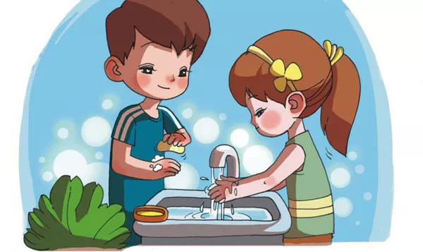

HxNy病毒中"H"和"N"分别是什么
H和N，是流感病毒外面裹的两种糖蛋白，一种是血凝素（hemagglutinin，HA）即"H"，一种是神经氨酸酶（neuraminidase,NA）即"N"。后面的数字来表示这种蛋白的不同亚型。其中，HA有16种亚型，NA有9种亚型，理论上讲，流感病毒可以有144（16*9）种不同的HN分型。但是由于HN抗原并不是随机结合的，相同HN分型也可以有不同的毒株，所以实际上流感病毒种类是少于144种的。
病毒性流感不需要吃药吗
病毒性流感不吃药物 也可以自愈，患上病毒性感冒后，要多喝热水多休息，吃药作用也不是很大，通常服用和注射的抗生素药物是针对细菌型感冒的，我们可以通过服用板蓝根后者抗病毒口服液来预防病毒性流感。
一般来说，病毒性感冒的鼻涕是清涕，并且没有脓性分泌物，而且一般鼻腔流涕症状会比咽部症状明显。如果是在受凉、淋雨、过度劳累以后，才出现的感冒，则一般是抵抗力下降引起的病毒性感冒。这也是为什么有人会提倡在淋雨后应该冲板蓝根颗粒之类的东西。而细菌性感冒的鼻涕则比较稠，并且会有浓痰等脓性分泌物，并且扁桃体或咽部红肿及疼痛比较明显，如果是小孩还可能出现持续高烧不退的症状。但是，如果出现了腹泻、眼角膜充血等伴随症状的时候，病毒性感冒的可能性则更大。
tips：我们患上病毒性流感后，也应该吃一些药物来防止病毒性流感转化为细菌性流感。
病毒性流感的临床表现
流感的潜伏期一般为1-7天，多数为2-4天。流感多发于活动范围较大或聚集性活动较多的青少年和青壮年，机体抵抗力较差的老年人、儿童或存在基础疾病的患者感染流感病毒后易发展成重症病例而致命。
单纯型流感：最常见，常突然起病，畏寒高热，体温可达39-40℃，多伴头痛、全身肌肉关节酸痛、极度乏力、食欲减退等全身症状，常有咽喉痛、干咳，可有鼻塞、流涕、胸骨后不适等。颜面潮红，眼结膜外眦轻度充血。如无并发症呈自限性过程，多于发病3-4天后体温逐渐消退，全身症状好转，但咳嗽、体力恢复常需1-2周。轻症流感与普通感冒相似，症状轻，2-3天可恢复。
肺炎型流感：实质上就是并发了流感病毒性肺炎，多见于老年人、儿童、原有心肺疾患的人群。主要表现为高热持续不退，剧烈咳嗽、咳血痰或脓性痰、呼吸急促、紫绀，肺部可闻及湿啰音。胸片提示两肺有散在的絮状阴影。痰培养无致病细菌生长，可分离出流感病毒。可因呼吸循环衰竭而死亡，病死率高。
中毒型流感：极少见，表现为高热、休克、呼吸衰竭、中枢神经系统损害及弥漫性血管内凝血(DIC)等严重症状，病死率高。
常见的HxNy病毒
甲型流感病毒为常见流感病毒，甲型流感病毒最容易发生变异，甲型流感病毒的亚型则被人们称为“禽流感”，禽流感(Bird Flu）是由禽流感病毒引起的一种急性传染病，病毒基因变异后能够感染人类，感染后的症状主要表现为高热、咳嗽、流涕、肌痛等，多数伴有严重的肺炎，严重者心、肾等多种脏器衰竭导致死亡，病死率很高。此病可通过消化道、呼吸道、皮肤损伤和眼结膜等多种途径传播，人员和车辆往来是传播本病的重要因素。
甲型流感对人类致病性高，曾多次引起世界性大流行。甲型流感病毒中至今发现能直接感染人的禽流感病毒亚型有：甲型H1N1、H5N1、H7N1、H7N2、H7N3、H7N7、H7N9、H9N2和H10N8。其中H1、H5、H7亚型为高致病性，H1N1、H5N1、H7N9尤为值得关注。
甲型H1N1流感
甲型H1N1流感于2009年爆发时，最初世界卫生组织使用了“猪流感”（swine flu）的名称，当初获得大部分国家跟随，除了以色列因为犹太教禁食猪肉而使用“墨西哥流感”。另还有猪源流感、人类猪（型）流感 、墨西哥流感、北美流感、H1N1新型流感，以及2009年H1N1流感等各种不一致的称呼。然而，没证据显示墨西哥是疫症源头，有关做法纯粹出于政治、宗教考虑。后来美国猪农抗议“猪流感”名称使人误会病毒经猪只传播，要求改称为“北美流感”，欧盟随即改称病毒为“新流感”。
2009年4月30日，由于农业界及联合国粮农组织的关切，世界卫生组织为免对因猪流感一词造成流感能经由进食猪肉制品传播的误解，当日开始改用甲型H1N1流感称呼该病毒。香港初时称俗称“猪流感”，其后跟随改称“甲型H1N1流感”，官方亦开始以“人类猪（型）流感”向外界通报。美国疾控中心则称之为新型甲型H1N1流感(novel Influenza A(H1N1))。 而香港大学微生物学系教授袁国勇表示，世卫将新型流感改名为甲型H1N1流感会令人分辨不到新型流感和季节性流感的分别。
甲型H5N1流感
甲型H5N1流感病毒也称H5N1病毒、H5N1禽流感，是甲型流感病毒的一个高致病性亚型，可以导致人或其他的一些动物死亡
H5N1病毒是1996年首次在中国广东的家鹅中明确发现。H5N1病毒主要感染鸟类并导致禽流感。1997年在香港传播时，很多农场的鸡受感染后都即时死亡，并引发首次报告了H5N1病毒感染人类的病例，使一名幼稚园学生死亡。2003年至2015年，全世界已向世界卫生组织报告630例人类确诊病例，其中375例死亡，死亡率约60%；这些确诊的报告病例全部发生在东南亚地区（印度尼西亚、越南、泰国、柬埔寨、中国大陆）。2006年3月9日，世界卫生组织(WHO)根据“一个中国”原则将“H5N1禽流感全球及国家图”将台湾划为感染区。2006年3月10日，世界卫生组织公开说明，台湾没有任何人类或家禽感染H5N1禽流感病例，不是传染区。 2013年5月2日，中国科学家在美国《科学》杂志网络版上报告说，他们“破译”了H5N1禽流感病毒感染人的分子机制，这一发现对防止禽流感病毒扩散具有重要意义。
甲型H5N9流感
H7N9（英语：Influenza A virus subtype H7N9，记作A(H7N9)或H7N9）是一种甲型流感病毒，是禽流感病毒或禽流感病毒的一个亚型，因病毒在禽鸟类的死亡率低，经基因交换后转移到人类上感染后成为病发期短、重症率与死亡率均相对于SARS略高而引发社会注意。
H7N9原本属于低致病性感冒病毒，仅在禽间发现。2006年美国卫生部美国国家生物技术信息中心公开了1988年发生于美国明尼苏达州的火鸡身上第一个病毒记录。2013年3月下旬，人类感染甲型流感H7N9病毒与病例在上海开始陆续在中国长江三角洲一带的城市被发现，这是该病毒全球首次感染人类，中国农业部兽医师于康震表示：家禽、鸽子中分离到的H7N9与患者分离出之病毒高度同源，该病毒经基因交换后仍能感染鸡、鸽子等禽鸟，对家禽呈低致病力，感染后没有显著症状或大规模患病与死亡，尚未发现猪感染该病毒（该病毒在活禽市场检出率最高，在养禽场尚未检出），日本国立感染症研究所流感病毒研究中心主任田代正人表示，H7N9病毒相对于其他禽流感病毒（如H5N1）较难追查，病毒在禽鸟间传播而不能被饲养者以至卫生部门及时发觉”
2013年4月，中国国家卫计委与世卫组织驻华代表蓝睿明均认为确诊病例间未发现流行病学联系，目前疫情处于散发状态，尚未发现人传人，但至今病毒来源不明、传播途径不清，不排除通过候鸟迁徙带入中国的可能；中国国家卫计委在4月17日之媒体沟通会上，中国疾控中心卫生应急中心主任冯子健表示，不排除该病毒存在有限“人传人”的能力。5月22日中新社报导，复旦大学公共卫生学院青年教师熊成龙、张志杰在最新一期的国际传染病领域著名期刊《临床传染病》（Clinical Infectious Diseases）发表研究成果显示，H7N9病毒起源于华东地区之家禽或野鸟，而非学界之前所认为的“来自于中韩禽类混血”。
及至2018年，东京大学教授河冈义裕等人组成的团队以一只健康雪貂与一只感染H7N9型禽流感的雪貂进行的研究表明病毒可经飞沫扩散，是首度确认禽流感病毒可透过飞沫传播给其他动物，而在该受感染雪貂80厘米外亦发现含病毒的飞沫。此前，科学家一直相信人类主要通过接触染病禽鸟、其粪便或受污染环境如家禽市场从而感染禽流感，病毒也不会出现于染病禽鸟的飞沫内，研究发表后科学家警告病毒有潜在人传人能力，或会造成全球流感大流行。
如何有效预防病毒性流感
病毒性流感传播速度快，感染程度大，病毒力强等特点，针对病毒性流感最有效的方法莫过于预防了，在病毒爆发开之前，接种相应的疫苗；锻炼身体，拥有强健的体魄；注意饮食卫生，也要强调饮食均衡，饭前餐后洗手，不吃不干净的东西；若身体不适，应尽早就医，病毒扩散期间尽量少去人多的场所，避免病毒进一步扩散。

图片源自http://www.moe.gov.cn/jyb_xwfb/xwfb_ft/s5984/201304/t20130419_150853.html
注：材料参考于百度百科，维基百科，中国知网等。